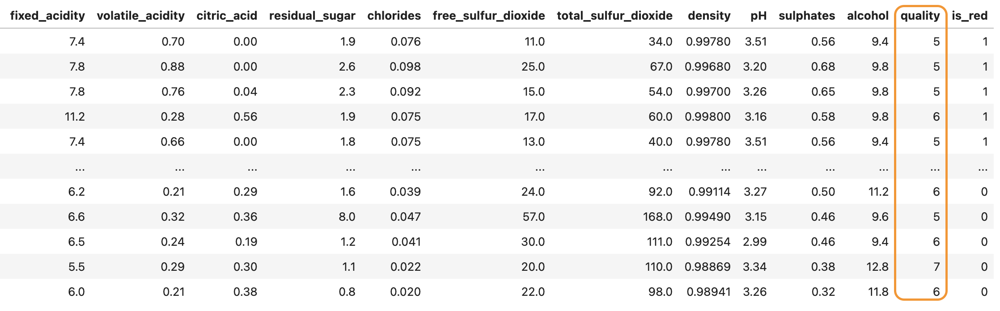

This article introduces you to how a group of Master’s students (AKA beginner Data Scientists) approached a real world problem with machine learning . Welcome!

Have you ever wished to have magical powers of knowing how good a wine is just by looking at its bottle? Well, that will definitely save all of us time and money with opening up bottles that may end up staying in the fridge for too long, or worse, garbage bins!! Though we are not expert wine critiques, and nor do we have magical powers granted by the wine gods (as of yet!!), we could still attempt to tackle this problem by analyzing physicochemical features of wines, including levels of fixed acidity, residual sugar, chlorides, etc. and see whether there are relationships between these features and the quality of wines. Before you get bored of the fancy and perhaps somewhat foreign chemistry terminology, please hear us out on how we hoped to predict wine quality through analyzing wines’ chemical makeup using machine learning techniques.
We borrowed an online dataset called Wine Quality from UCI Machine Learning Repository that contains information on more than 5000 wines. (If you’d like, you can have a look at the dataset and even download it here: https://archive.ics.uci.edu/dataset/186/wine+quality). Just like you, not knowing too much about wines, we are at a bit of loss on what these features mean and how each might affect wine quality, so we decided to use a machine learning model, called Logistic Regression, from the scikit-learn library to help us out. It’s an algorithm that reads a great amount of data (much faster than humans do!) and lets us know any correlations or associations between what we know (in this case, the levels of different physicochemical features inside the wine) and what we want to know (the wine’s quality, measured on a numerical scale - a higher number means a better quality, let’s call this the wine quality score).
After some cleaning, here is how our dataset looks like: 
As you can see, the orange column named ‘quality’ contains wine quality scores. This is what we want to know, AKA, the target variable. Other than 11 physicochemical features, we also included a column (the last column) for the color of the wine. This dataset only included red and white wines, so if the ‘is_red’ column shows 1, that means the data belongs to a red wine. If it shows 0, then it’s a white wine. (No offense for Rose lovers out there!! I myself am curious about any data on them too…) “Why would one include the color of wine?” You might wonder, and to that we answer, perhaps the relationships between certain physicochemical features and wine quality scores would differ slightly for red and white wines - well, we are only guessing too since we honestly know nothing about wine qualities and what they entail. So let’s put our Logistic Regression “detective” to work and see if it could come up with some ingenious insights to help us!
A little bit background on Logistic Regression: it is a classification model in machine learning that loves working with numbers in your data. Its output are classification labels, something like “High”, “Medium”, “Low” are perfect examples of classification, as you are putting thing into “classes”. This explains why it is a perfect model to use for our problem, knowing that all our features are numerical and our target variable, wine quality score, can be seen as each number representing a class (for example, a wine with quality score of 6 is just one step better than a wine with a quality score of 5, and a quality score of 9 is a whole lot, to be exact, 6 steps, better than a quality score of 3!)
In order to make sure all features are on the same numerical scale, we used Standard Scaler to normalize the values first. More on this, please refer to this post (you might need to scroll down a bit to find the green checkmarked answer): https://stackoverflow.com/questions/40758562/can-anyone-explain-me-standardscaler. Then, we optimized a Logistic Regression model by tuning its hyperparameter. We know these might be foreign concepts for those that are still new to machine learning, but we are skipping over them as we would like to give you an overview of our process and focus on the key takeaways of discerning results of an exploratory machine learning approach to a problem that we know little about, like what we have done here to the Wine Quality dataset. (More on hyperparameter tuning: https://aws.amazon.com/what-is/hyperparameter-tuning/)
After all the preparation work, we are now ready to take our Logistic Regression to test! We had already split the entire dataset into a training set (containing 80% of wine data available) and a test set (containing the rest 20% of the wine data). We let Logistic Regression do all its learning and “detective”-ing on the training set, and we asked it to use what it learned and make predictions on the test set. Through the learning process, Logistic Regression had tried to associate each physicochemical feature of each wine in the training data with that wine’s quality score, performing calculations based on mathematical concepts, such as linear combination and logistic function (There are many excellent resources on the internet that go into more depths on how Logistic Regression works, and always feel free to ask my personal favourite, ChatGPT! :D). For a wild example, just for demonstration purpose, it may have learned that a red wine with a chlorides level in the top 20% range of chlorides levels among all the red wines in the training data tends to have a quality score of 8. (This is a total random example - please forgive me if you who are reading this know more about wines than I do and I am making a laughable claim!!)
But, whatever patterns learned by our Logistic Regression are determined by the training data that is available to it and the values of some of its hyperparameters. During Logistic Regression’s prediction process on the test data, we asked it to look at the physicochemical feature values for each wine in the test set without looking at its wine quality score and tell us, based on what it learned, what the quality score should be. We then compared each predicted quality score with the actual quality score, which we hid from Logistic Regression, to get an idea of how accurate the predictions are, and answer the question, has Logistic Regression learned the correct patterns to associate each physicochemical feature with its quality score? How often are Logistic Regression able to make a correct prediction on the test dataset?
Unfortunately, the answer to our last question was: not often enough. Our Logistic Regression only made correct wine quality score predictions on 54% of the test data. That means, it’s making mistakes on almost half of the wines there! We have to admit we were a little disappointed, but like any superheros from our favourite comics and movies, we were not ones to give up on continuing finding solutions!! We realized the biggest obstable with solving the problem at hand is our lack of understanding on wine knowledge and wine quality, therefore, perhaps speaking to individuals with such expertise could give us insights on what each physicochemical feature means to a wine and how it matters to its quality and help us develop strategies to either update our datasets or re-configure our Logistic Regression, or even choose a more suitable machine learning model, to attempt to make more accurate wine quality score predictions. Understanding how wine quality scores are determined can also help us make decisions on any potential changes in labeling the target variable - maybe we don’t need all the quality scores, but instead, we could group a few quality scores into a single category, for example, we could say wines with quality scores of 3 and 4 should be labeled as “Low-quality” and wines with quality scores of 7, 8, 9 should be labeled as “High-quality”?
Also, trying to collect more data on other wines wouldn’t hurt too!
We know this is a very brief overview of the project we did and if you’d like, you can check out more details here: https://github.com/UBC-MDS/wine-quality-regressor-group-2. This repo not only contains code we wrote to get to where we got, but also graphs we plotted on the wine data in our Exploratory Data Analysis process. And, you can examine the patterns (i.e. coefficients) our Logistic Regression learned, which we plotted at the end of our report here: https://github.com/UBC-MDS/wine-quality-regressor-group-2/blob/main/reports/wine_quality_regressor_report.pdf.
Thank you for taking a few minutes of your time to take a peek into our first attempt to solve a problem which we do not have much knowledge on using a machine learning model. We are aware there are different ways others have attempted to approach and solve the wine quality score prediction problem, and unlike us, some of them actually found models that work pretty well! The key takeaways here, besides gaining some insights into how machine learning may help in solving Data Science problems, are the approach to unfamiliar problems and how we re-position ourselves when outcomes or machine learning metrics don’t come out quite as we expect. That’s the part we are being challenged to use our creativity and to apply our knowledge in machine learning and beyond. Perhaps you have heard it before, Data Science is as much of a technical field as it is a human one, and any technological advancement would be meaningless if it isn’t created by a human (or driven by a human need).
If you think you have a different approach to the Wine Quality dataset or have any insights after reading our blog, please feel free to let us know. We are always open to new ideas that sparkle inspirations and open our world!